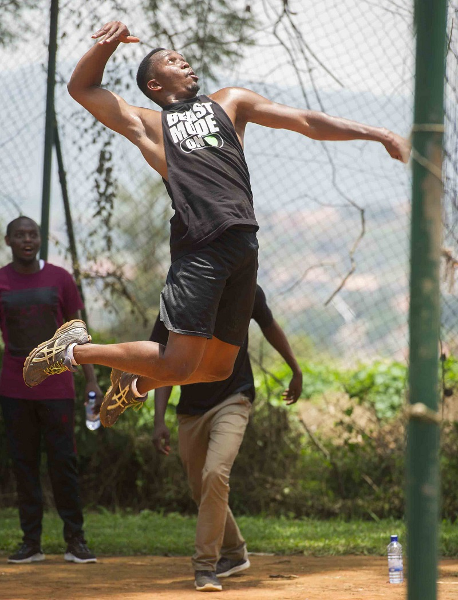
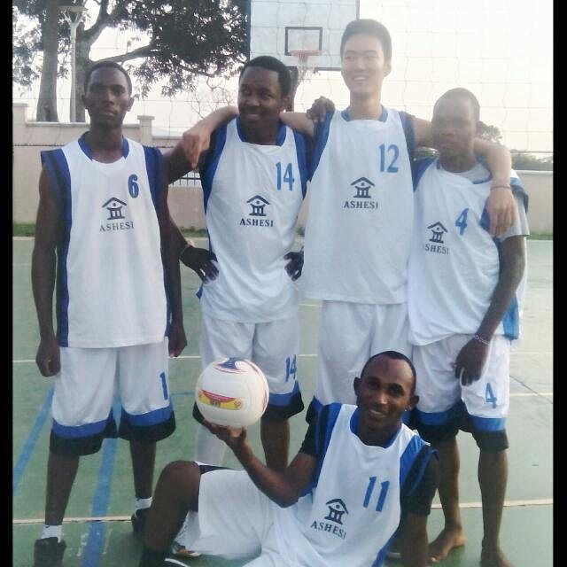
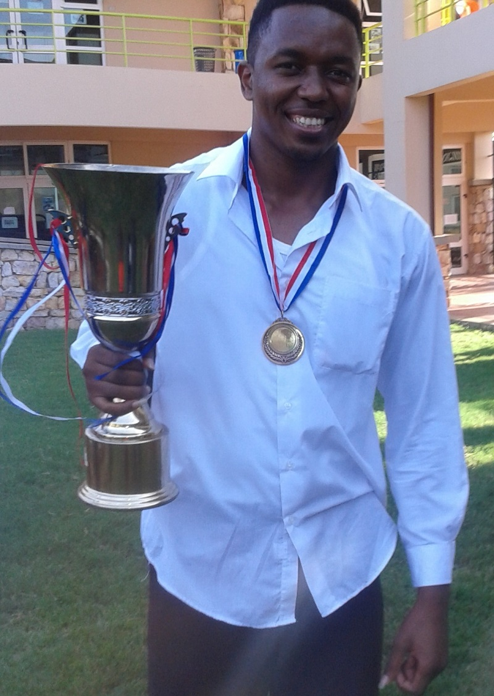

My Obsession For Sports
My Obsession For Sports It’s been more than 10 years now since I actively got engaged in sports. Looking back at the experiences gathered during that period, I have grown to a sports and fitness addict. I have competed in various sports, learnt new sports, and sadly got numerous injuries some of which have never healed.
Today I can play volleyball, badminton, football, table tennis, basketball as well as run short and long distances. Beyond that I’m actively into aesthetic bodybuilding, a sport I have done for almost 2 years now. Aesthetic bodybuilding is in line with Goldilocks' principle not too big, not too small but just right in terms of muscularity.
Reasons Why I Like Sports
- It is fun to play and watch others play.
- list text hereIt is healthy, mind refreshing and a natural stress reliever.
- Sports keep me busy making good use of my free time and keeping me off trouble
- It gives me the urge to work hard and become better every day. You basically never stop learning.
- Sports have enabled me develop good time management skills.
- Through sports I have made many friends and learnt to work in teams.
How It All Began
Below is my recent volleyball game. I still haven't forgotten the skills.

When I joined Don Bosco Secondary School, I became part of the school volleyball team, being the only first year with no prior experience in the game I had a lot to learn to catch up with the rest of team members. That year, our team fought its way through to the Provincials, this meant we were going to be out of school for at least one week. Like any other student I was always excited to participate in any activity that would even get me out of school for 1 week. I trained more and my mastery for the game improved and I became the team captain in my 3rd year. I was also voted as the Sports Captain. This became my first experience to hold a leadership position.
I went to college, Ashesi University in Ghana at a time they had just moved to a new campus. This meant the sport facilities were limited with only a basketball court. The volleyball court which was inside the basketball court did not have posts nor a net. It felt abnormal that I wasn’t participating in any kind of sports so I started jogging every day in the evenings.
After 1 year of working with the administration, I got volleyball posts, a net and 2 balls. I began playing in the evenings with friends and later on we created a team. I became the teams’ coach and captain, a position I held for 3 years. During this time I learnt how to manage teams, communicate effectively and manage my time better since I had to attend all the train sessions despite the school workload. With the increased participation of ladies in the sport, I created a female volleyball team. We competed against other universities on numerous occasions. During summer breaks, I would play volleyball on a daily basis with a volleyball club in Nairobi after work.
My first volleyball game at Ashesi University against University of Ghana (Legon)

In my third year in college, I was voted Sports Committee Chairperson where I headed a committee of eight students to improve the sports experience in our campus. Some of the noticeable achievements during my tenure include; female football, volleyball and basketball teams, table tennis and badminton, pool table, increased participation in external events, and increased competitiveness in Ashesi Football Club. At the end of the year I was awarded The Sportsman of the Year award at Ubora awards, an event that recognizes contributions of individuals that have made improvements in Ashesi Community at large.
Award for winning Ashesi football tournament(2016)

In my graduate studies in Rwanda, I was voted again as the Sports Minister where my major achievement were increased participation in sports by the students and introduction of CMU Africa inter class competition. While at CMU Africa, I developed a new interest in aesthetic bodybuilding and reduced my engagement in volleyball due to knee injuries.
10 km marathon race (2017)

I have learnt and continue to learn a lot from the internet and competitive athletes that I follow on how to become good in different sports. Currently, I do not have plans to participate in competitive sports but it’s something I have incorporated as a lifestyle and would want to continue with it. I also enjoy adrenaline rush activities such as zip lining, bungee jumping, sky diving, hiking among others. I’m actually planning to hike Mt Kenya sometime this year (tentative August). If you are interested in the hike let me know.
Always do what you love and don’t give excuses that you do not have adequate time.
Remember fitness is not a destination it’s a lifestyle.
To make a comment you have to login
0 Comments